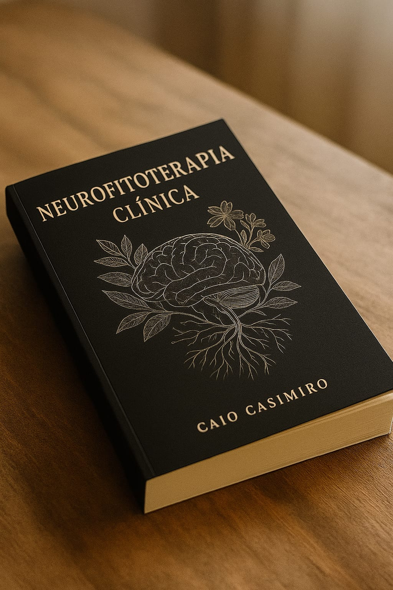

Atuo há mais de 3 anos na área da saúde mental, unindo práticas clínicas
fundamentadas na neurociência, psicologia e terapias integrativas. Sou formado em
Terapias Integrativas e Complementares, com especialização em
Psicanálise e Neuropsicopedagogia Clínica, e colaboro com a
Justiça Federal em Goiás (TRF1).
Sou autor do livro “Neurofitoterapia Clínica”, publicado pela AB Editora, com
aproximadamente 150 páginas e foco na aplicação de compostos naturais no tratamento de
transtornos emocionais e neurocognitivos. Até o momento, mais de 100 pacientes já foram
atendidos com base nessa abordagem.
150+
Pesquisas Publicadas
100+
Pacientes Tratados
Novo Livro Lançamento
Descubra os segredos da mente humana e como ela pode ser otimizada
para uma vida mais plena e produtiva.

"Neurofitoterapia Clínica: um guia para Neurocientistas"
Está sendo lançado o livro Neurofitoterapia Clínica: um guia para Neurocientistas,
do terapeuta integrativo e neurocientista clínico Caio Casimiro de Queiroz Silva, publicado
pela tradicional AB Editora. A obra apresenta pela primeira vez no Brasil o conceito de
Neurofitoterapia, que integra neurociência clínica ao uso
racional de fitoterápicos e compostos naturais. Com foco em
profissionais da saúde, terapeutas, educadores e estudantes, o livro aborda
os efeitos de plantas medicinais sobre o sistema nervoso, aplicáveis em
casos como ansiedade, insônia, TDAH,
depressão e alterações cognitivas leves.
Além da base científica, a obra discute legislação, ética
e segurança terapêutica, oferecendo orientações clínicas e
reforçando a autonomia profissional. Segundo o autor, a proposta é
complementar a medicina tradicional com alternativas seguras e baseadas em
evidências, evitando o uso excessivo de psicotrópicos em quadros leves. Já considerada uma
referência em terapias integrativas com base neurocientífica, a publicação
deve ganhar espaço em áreas como neuropsicopedagogia, psicanálise
clínica e educação terapêutica.
150 páginas de conteúdo científico acessível
Aplicações terapêuticas de fitoterápicos em saúde mental
Fundamentos neurocientíficos com foco clínico e prático
Entre em Contato
Precisa de orientação clínica ou quer agendar uma consulta com um especialista em neurociência,
psicanálise ou terapias integrativas?
Entre em contato direto com o Dr. Caio Casimiro para atendimento presencial em Goiânia ou online
para todo o Brasil.